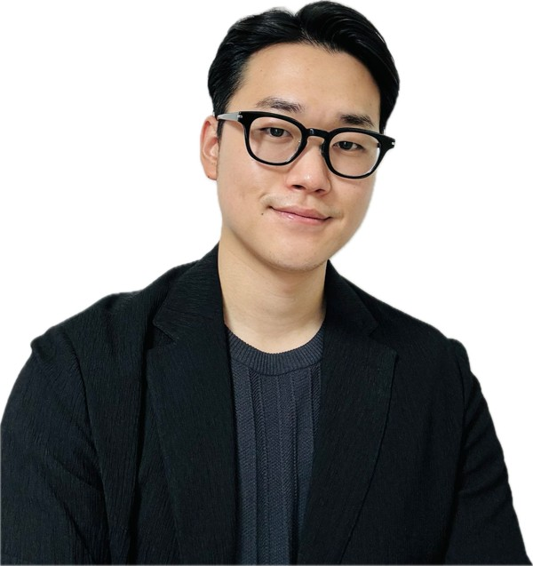

Munkyun Lee, Ph.D.
(Infra AX/PI Team, Global Manufacturing & Infra Technology, DS Division)
Doctor of Engineering (Architecture, The University of Tokyo)
E-mail: research.mklee95@gmail.com
Linked in: https://www.linkedin.com/in/munkyun-lee-ph-d-0a92a524a/
Research Gate: https://www.researchgate.net/profile/Munkyun-Lee
Introduce
Munkyun Lee majored in architectural structure design and analysis. His specialization is computational structural design, computational kinematics, and digital fabrication. His research revolves around realizing transformable and deployable structures that use origami principles to construct spatial structures and infrastructure rapidly.
Collaborating with experts across diverse realms, he seeks to scale up origami structures and develop software to automate design, analysis, and fabrication methods. If successful, origami structures serve as vital temporary emergency housing solutions, offering swift relief to communities following catastrophes like pandemics, earthquakes, floods, and more. Furthermore, he aims to integrate origami-based structures with modular systems, enhancing construction speed and simplicity. This innovative approach holds promise for significantly streamlining building workflow, potentially evolving into adaptable, transformable habitats.
Beyond his primary focus, Munkyun is broadening his research scope to encompass various fields. He has developed an interest in mechanical meta-materials to enhance structural and dynamic properties. Moreover, he has recently been exploring the possibilities of flexible and stretchable electronic devices, including displays, based on the Kiri-origami mechanism and compliant mechanism, and robotics applications for automatic deploying and folding motion.
Research Interests
- Deployable & Transformable Structure
- Computational Design & Analysis
- Origami Engineering
- Modular System
- Compliant Mechanism
- Mechanical Metamaterial
- Computational Geometry
- Digital Fabrication
- Seismic Isolation & Reduction System
- Structural Analysis & Evaluation Methodology
Education
| 2023.04 ~ 2026.03 |
The University of Tokyo Ph.D. in Architecture, Tachi Lab. Thesis: Geometry and Mechanics of Multistable Origami Blocks Advisor: Tomohiro Tachi |
Tokyo, Japan |
| 2021.04 ~ 2023.03 |
The University of Tokyo M.S. in Architecture, Tachi Lab. Thesis: Design and Evaluation of Compliant Hinges for Deployable Thick Origami Structures Advisor: Tomohiro Tachi |
Tokyo, Japan |
| 2015.04 ~ 2021.03 |
The University of Osaka B.S. in Global Architecture – Architectural Engineering Course, Miyamoto Lab. Thesis: Study on the Seismic Response Reduction of Houses with Magnetically Levitated Foundation Advisor: Yuji Miyamoto |
Osaka, Japan |
Work Experiences
| 2026.04 ~ Present |
Samsung Electronics Staff Engineer II
|
Pyeongtaek, Korea |
| 2025.07 ~ 2025.08 |
Samsung Electronics Global Internship Global Talent (Industry-Academic Scholarship) Program
|
Pyeongtaek, Korea |
| 2024.03 ~2026.03 |
JSPS Research Fellowship (DC2) Research Fellow
|
Tokyo, Japan |
| 2022.04 ~ 2026.03 2021.04~07 2022.10~01 2023.10~01 |
The University of Tokyo Research Assistant
|
Tokyo, Japan |
| 2016.03 ~2017.12 |
Military Service Korea National Police Agency - Auxiliary police |
Seoul, Korea |
Publications [ SCI Journal & Full Paper Proceedings (Reviewed)]
- Munkyun Lee, Joseph M. Gattas, Kumiko Hayashi, Yuya Kurusu, Toshiyuki Morishima, Hiroshi Sato, Mizuki Shigematsu, Maiko Takiguchi, Hiroki Tamai, Issei Tanaka and Tomohiro Tachi, “CC-Chair: Reconfigurable multistable curved-crease origami chair block”, Proceedings of International Association for Shell and Spatial Structures (IASS) Annual Symposia, Turin, Italy, 2026.09
[Link: https://www.researchgate.net/publication/414415481_CC-Chair_Reconfigurable_multistable_curved-crease_origami_chair_block] - Munkyun Lee, Joseph M. Gattas, and Tomohiro Tachi, “Multistable Curved-crease Origami Blocks for Reconfigurable Modular Building System”, Proceedings of International Association for Shell and Spatial Structures (IASS) Annual Symposia, Mexico City, Mexico, 2025.10
[Link: https://www.ingentaconnect.com/contentone/iass/piass/2025/00002025/00000019/art00008] - Munkyun Lee, and Tomohiro Tachi, “Design and Evaluation of Compliant Hinges for Deployable Thick Origami Structures”, Journal of the International Association for Shell and Spatial Structures (IASS), No. 65(4), pp.238-247. 2024.12
DOI: https://doi.org/10.20898/j.iass.2024.015 - Munkyun Lee, Kiumars Sharifmoghaddam, and Tomohiro Tachi, “Multistable Polyhedral Origami Modules for Curved Surface Assembly”, Proceedings of International Association for Shell and Spatial Structures (IASS) Annual Symposia, 2024.08
[Link: https://www.ingentaconnect.com/contentone/iass/piass/2024/00002024/00000012/art00036] - Munkyun Lee, Mahmoud Abu-Saleem, Tomohiro Tachi, and Joeseph M. Gattas, “A Lightweight Building Construction System using Curved-Crease Origami Blocks”, Proceedings of the 8th International Meeting on Origami in Science, Mathematics, and Education (8OSME), 2024.07
DOI: https://doi.org/10.1007/978-981-96-8664-3_18 - Munkyun Lee, Yuki Miyajima, and Tomohiro Tachi, “Designing and Analyzing Multistable Mechanisms using Quadrilateral Boundary Rigid Origami”, ASME. J. Mechanisms and Robotics, 16(1):011008, 2024.01
DOI: https://doi.org/10.1115/1.4062132 - Felix Dellinger, Martin Kilian, Munkyun Lee, Christian Muller, Georg Nawratil, Tomohiro Tachi, and Kiumars Sharifmoghaddam, “Snapping Deployable Toroids for Modular Gridshells”, ACM Trans. Graph., Vol.44, No.6, pp.235:1-21, ACM SIGGRAPH Asia 2025, Hong Kong, China, 2025.12
DOI: https://doi.org/10.1145/3763808 - Yuki Miyajima, Munkyun Lee, and Tomohiro Tachi, “Designing Multistable Mechanisms using Quadrilateral Boundary Rigid Origami”, ASME International Design Engineering Technical Conferences & Computers and Information in Engineering Conference (IDETC/CIE), St. Louis, United States, 2022.11
DOI: https://doi.org/10.1115/DETC2022-89035
Presentations
- [Oral] Munkyun Lee, Joseph M. Gattas, and Tomohiro Tachi, “Multistable Curved-crease Origami Blocks for Reconfigurable Modular Building System”, International Association for Shell and Spatial Structures (IASS) Annual Symposia, Mexico City, Mexico, 2025.10
- [Oral] Munkyun Lee, Kiumars Sharifmoghaddam, and Tomohiro Tachi, “Multistable Polyhedral Modules for Curved Surface Assembly”, Proceedings of International Association for Shell and Spatial Structures (IASS) Annual Symposia, 2024.08
- [Oral] Munkyun Lee, Mahmoud Abu-Saleem, Tomohiro Tachi, and Joeseph M. Gattas, “A Lightweight Building Construction System using Curved-Crease Origami Blocks”, Proceedings of the 8th International Meeting on Origami in Science, Mathematics, and Education (8OSME), 2024.07
- [Oral] Munkyun Lee, and Tomohiro Tachi, "Design and Evaluation of Compliant Hinges for Deployable Thick Origami Structures", Symposium of the International Association for Shell and Spatial Structures (IASS) 2023, Melbourne, Australia, 2023.07
- [Oral] Yuki Miyajima, Munkyun Lee, and Tomohiro Tachi, "Designing Multistable Mechanisms using Quadrilateral Boundary Rigid Origami", ASME International Design Engineering Technical Conferences & Computers and Information in Engineering Conference (IDETC/CIE), St. Louis, United States, 2022.08
- [Oral] Munkyun Lee, Tomohiro Tachi, "Compliant Folding Hinge Structure using Radial Slit Pattern", World Congress on Computational Mechanics - Asian Pacific Congress on Computational Mechanics (WCCM-APCOM), Yokohama, Japan, 2022.08
- [Oral] LEE MUNKYUN，Kiumars Sharifmoghaddam，舘知宏：多安定な多面体折紙モジュールを用いた曲面組立，日本応用数理学会 第 20 回研究部会連合発表会, 2024.03
- [Oral] LEE MUNKYUN，舘知宏：厚みのある折紙構造のためのコンプライアントな折りヒンジの設計と評価，日本応用数理学会 第 19 回研究部会連合発表会, 2023.03
- [Oral] LEE MUNKYUN，舘知宏：放射状のスリットパータンを用いたコンプライアントな折りヒンジ構造，日本応用数理学会 第 18 回研究部会連合発表会, 2022.03
- [Oral] LEE MUNKYUN，Mahmoud Abu-Saleem，舘知宏，Joeseph M. Gattas：曲線折紙ブロックを用いた軽量のモジュラー建設システム，日本折紙学会 第 36 回 折り紙の科学・数学・教育研究集会, 2024.05
- [Oral] LEE MUNKYUN，舘知宏：四辺形境界剛体折紙を用いた多安定機構の設計と分析，日本折紙学会 第 34 回 折り紙の科学・数学・教育研究集会, 2023.06
- [Oral] LEE MUNKYUN，舘知宏：放射状の巴形パータンを用いたコンプライアントな折りヒンジ構造，日本折紙学会 第 32 回 折り紙の科学・数学・教育研究集会, 2022.06
- [Oral] LEE MUNKYUN，舘知宏：放射状のスリットパータンを用いたコンプライアントな折りヒンジ構造，日本折紙学会 第 31 回 折り紙の科学・数学・教育研究集会, 2021.12
Awards
- Engineering Graduate School Dean’s Award (Research) – The University of Tokyo (2026.03)
[Link: https://www.t.u-tokyo.ac.jp/topics/tp2026-04-06-001] - IASS Tsuboi Award 2023 (2024.08)
The most outstanding paper presented and published in the Proceedings of the IASS Symposium 2023 (Publications [2])
[Link: https://iass-structures.org/Tsuboi-Award-Recipients]
Grants
- DC 2 Research Fellowship for Young Scientists
Japan Society for the Promotion of Science (JSPS) (Apr. 2024 ~ Present)
Total Grant: ¥1,500,000
[Link: https://kaken.nii.ac.jp/ja/grant/KAKENHI-PROJECT-24KJ0648/] - Designing Future Society Fellowship of The University of Tokyo (Wings-DFS Fellowship)
(Apr. 2023 ~ Present)
Total Grant: ¥340,000/Y (Replaced by JSPS)
Scholarships
- Samsung Electronics DS Global Talent Scholarship Program
Industry - Academic scholarship program: Division of Global Manufacturing & Infra Technology - 15th Korea-Japan Joint Government Scholarship Program for The Students in Science and Engineering, NIIED (Gov. of South Korea) & MEXT (Gov. of Japan),
(Mar. 2014 ~ Mar. 2021) Full Funding Government Scholarship Program
Exhibitions
- Exhibition: Connecting Artifacts 05 (2025.10) - Curved-Crease Origami Chair Blocks
[Link: https://sites.google.com/view/connecting-artifacts/05?authuser=0] - Exhibition: Connecting Artifacts 04 (2024.10) - Curved-Crease Origami Column Blocks
[Link: https://sites.google.com/view/connecting-artifacts/04?authuser=0]
Seminars & Workshops
- Seoul National University Seminar Talk (2025.05)
Seminar Talk: “Multistable Origami Blocks for Adaptive Modular Building Systems”
Department of Mechanical Engineering in SNU
Hosted by Prof. Jinkyu Yang
[Link: https://me.snu.ac.kr/%ec%84%b8%eb%af%b8%eb%82%98-%eb%b0%8f-%ed%96%89%ec%82%ac/document/20572/] - Origami Engineering Workshop in Princeton University (2024.12)
Learn how you can use simple folding rules to design and fabricate reconfigurable structures.
Hosted by Prof. Glaucio H. Paulino
[Link: https://cglink.me/2gi/r1952838] - Structural Origami Gathering (2022.03, 2025.02, 2026.02)
We collaboratively share, solve, and create scientific, engineering, design, math, and computational problems in origami, which leads to further collaborations for research or design projects.
2022 – Online, 2025 – Keio University (Tokyo, Japan), 2026 – EPFL (Lausanne, Switzerland)
[Link: https://structuralorigami.com] - [Showcasing] NHK Special “新ジャポニズム第４集 DESIGN 世界を魅惑する“和”の魔法”
[Link: https://www.nhk.jp/p/special/ts/2NY2QQLPM3/episode/te/KWX433Q5Y6/] - GMSI US Workshop (2023.03)
Research exchange meeting with the Michigan university.
Visiting Toyota North America Headquarter R&D Lab., and Sony Pictures LA.
[Link: https://gmsi.t.u-tokyo.ac.jp/src/2023_International_Workshop_in_US.pdf]
Language
- Korean: Native
- Japanese: Fluent Speaking, N1 (2019)
- English: Business Speaking, TOEIC L&R 895 (2019)
Skills & Techniques
Software Techniques
- Rhinoceros & Grasshopper (Advanced Level)
- Abaqus (Advanced Level)
- Ansys
- Autodesk Inventor Nastran
- MATLAB
- Python
- But now, GPT, Claude, Gemini can do whole things...
Fabrication Techniques
- Laser Cutting
- 3D Printing
- Cutting Plotter
- 2-Axis CNC Cutting
- 3D Scanning